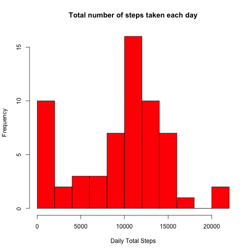
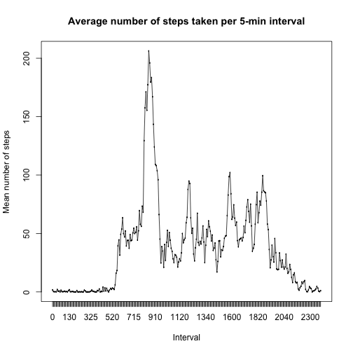
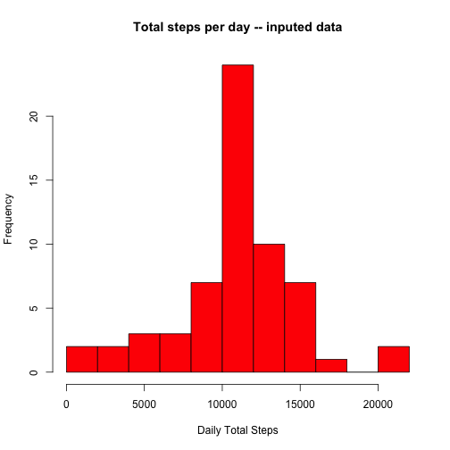
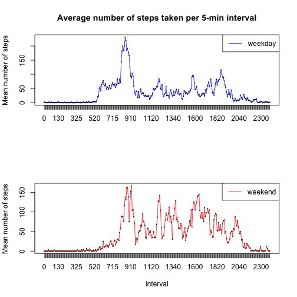

The code below loads the data into the environment, the date variable will then be converted into the Date-only format and the interval variable will be used as a grouping factor.
data <- read.csv("activity.csv")
data$date <- as.Date(data$date,format="%Y-%m-%d")
data$interval <- as.factor(data$interval)
In this part all the raw data will be summarized by date, and the total number of steps taken per day will be calculated.
A histogram will be generated showing the distribution of the total number of steps taken per day (see Fig. 1). The mean and median total number of steps taken per day are also calculated and reported. For this calculations the library plyr will be necessary.
library("plyr")
dfPerDate <- ddply(data,~date,summarise,sumSteps=sum(steps,na.rm=TRUE),meanSteps=mean(steps,na.rm=TRUE),sdSteps=sd(steps,na.rm=TRUE))
meanTotalStepsPerDay <- mean(dfPerDate$sumSteps,na.rm=TRUE)
medianTotalStepsPerDay <- median(dfPerDate$sumSteps,na.rm=TRUE)
hist(dfPerDate$sumSteps,col="red", xlab="Daily Total Steps",main="Total number of steps taken each day",breaks=10)

Fig. 1: Histogram of the total number of steps taken each day.
In this section the data frame is summarized by intervals (5 minutes) and for each interval the mean of number of steps taken is calculated across all days. Then a time series plot (see Fig. 2) is generated showing the average number of steps taken per interval across all days.
dfPerInterval <- ddply(data,~interval,summarise,sumSteps=sum(steps,na.rm=TRUE),meanSteps=mean(steps,na.rm=TRUE),sdSteps=sd(steps,na.rm=TRUE))
intervalWithMostSteps <- dfPerInterval$interval[dfPerInterval$meanSteps == max(dfPerInterval$meanSteps)]
with(dfPerInterval, plot(interval,meanSteps, type = "l",xlab="Interval",ylab="Mean number of steps",main="Average number of steps taken per 5-min interval"))
with(dfPerInterval, lines(interval,meanSteps))

Fig. 2: time series plot of the 5-minute interval and the average number of steps taken, averaged across all days.
The interval with the maximum number of steps is "835".
The objective of this part is to threat the missing values found in the dataset. The average steps taken is used to fill the gaps.
An histogram similar to Fig.1 is then generated to show the distribution of the total number of steps taken each day for the generated (see Fig. 3). The mean and median total number of steps taken per day for the inputed data are also calculated and reported.
NumMissing <- sum(is.na(data$steps))
inputedData <- data
# Replacing the missing values with the mean for that 5-minute interval across days
for (i in which(is.na(data$steps))) {
inputedData$steps[i] <- dfPerInterval$meanSteps[which(dfPerInterval$interval==inputedData$interval[i])]
}
newdfPerDate <- ddply(inputedData,~date,summarise,sumSteps=sum(steps,na.rm=TRUE),meanSteps=mean(steps,na.rm=TRUE),sdSteps=sd(steps,na.rm=TRUE))
newmeanTotalStepsPerDay <- mean(newdfPerDate$sumSteps,na.rm=TRUE)
newmedianTotalStepsPerDay <- median(newdfPerDate$sumSteps,na.rm=TRUE)
hist(newdfPerDate$sumSteps,col="red", xlab="Daily Total Steps",main="Total steps per day -- inputed data",breaks=10)

Fig. 3: Histogram of the total number of steps taken daily for the inputed data.
There are 2304 missing values in the dataset. The missing values were then replaced with the mean for that 5-minute interval across days.
The mean and median of total number of steps taken per day are 1.0766189 × 104 and 1.0766189 × 104, respectively.
The mean and median of the total number of steps taken daily increased after data imputing.
In this section, the generated data is splitted into 2 subgroups by the date that the data was collected. The groups contain data collected during weekdays and weekends, respectively.
A panel plot is generated to show the activity pattern for weekdays and weekends (See Fig. 3).
For this part the package timeDate is required.
require(timeDate)
inputedData$dayoftheweek <- as.factor(isWeekend(inputedData$date))
levels(inputedData$dayoftheweek ) <- c("weekday","weekend")
newdf <- ddply(inputedData,dayoftheweek~interval,summarise,sumSteps=sum(steps,na.rm=TRUE),meanSteps=mean(steps,na.rm=TRUE),sdSteps=sd(steps,na.rm=TRUE))
# Sebsetting the dataset
weekdaydata <- subset(newdf,dayoftheweek=="weekday")
weekenddata <- subset(newdf,dayoftheweek=="weekend")
# generating the required plots
par(mfrow=c(2,1))
with(weekdaydata,plot(x=interval,y=meanSteps, type = "n",xlab="",ylab="Mean number of steps",main="Average number of steps taken per 5-min interval"))
with(weekdaydata, lines(interval,meanSteps,col="blue"))
legend("topright",lty="solid",col = "blue",legend="weekday")
with(weekenddata,plot(x=interval,y=meanSteps, type = "n",xlab="interval",ylab="Mean number of steps",main=""))
with(weekenddata, lines(interval,meanSteps,col="red"))
legend("topright",lty="solid",col = "red",legend="weekend")

Fig. 3: Activity pattern for weekdays and weekends.